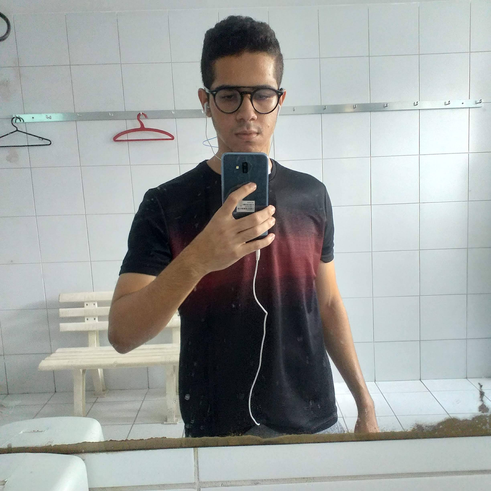
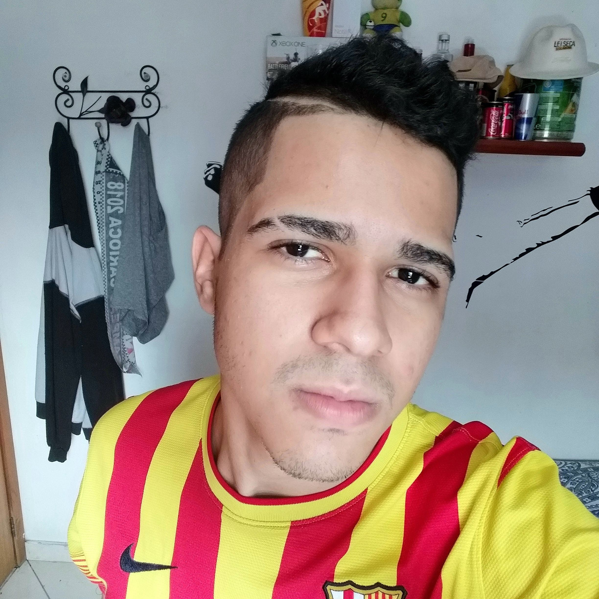

“É mais provável que um restaurante especializado em uns poucos pratos consiga uma boa repetição do que um com o cardápio muito variado.“
As Coisas que Você Só Vê Quando Desacelera por Haemin Sunin.
Sobre mim
Sei que é clichê, mas eu era aquela criança fissurada em video games, só parando de jogar se me obrigassem a sair mesmo hehe. Mas já nessa época me batia a curiosidade de saber como os jogos eram feitos e isso foi o começo do que eu virei atualmente. Além disso, eu tive contato com computadores desde cedo, já curtia navegar pela internet. Internet lentíssima por sinal. Gostava de usar redes sociais, inclusive acessar as comunidades alheias do Orkut, conversar pelo MSN, jogar joguinhos vendidos em bancas de jornais e de sites bem famosos, como “Clique Jogos” e etc. Fora que nessa época eu já curtia mexer nas configurações do computador, e ainda aprendi a gravar conteúdo audiovisual, passando para um CD.
O tempo foi passando e eu ainda cogitava para o meu futuro trabalhar com programação de jogos, só que isso só ficou no imaginário mesmo, nunca sequer fui atrás disso na realidade. Acabei chegando no ensino médio, sem saber o que eu iria cursar no ensino superior. Com o término do ensino médio, eu fui pesquisar sobre faculdades para saber se alguma iria me chamar atenção, e de fato, alguns cursos me chamaram atenção, como os cursos de TI, Administração e Psicologia. Como eu era péssimo em exatas no período escolar eu achei que a área de TI não era para mim (Sim, eu cometi esse erro). Psicologia, eu ainda gosto, mas não gostaria de trabalhar com. Então, acabou sobrando Administração, já que é mais amplo, foi uma escolha melhor, pois poderia trabalhar em várias coisas com ela.
Enfim, me matriculei em Administração na faculdade Estácio de Sá, no período noturno e nesse curso obtive uma experiência de vida interessante, conheci pessoas de várias realidades diferentes da minha, como era um curso noturno, a maioria era mais velha que eu ou tinha um vida diferente, já trabalhavam há uns anos e estavam ali para obter condições melhores de trabalho/oportunidades através de uma graduação. Además, realizei alguns trabalhos em grupo interessantes, como ajudar uma ONG necessitada e visitar uma fábrica de produção de materiais para construção, assim entendendo como funciona toda a produção e logística disso. E, no caso da ONG, conhecer pessoas em situação de vulnerabilidade. Novamente voltando a questão de experiências importantes na vida. E, me sentir útil por participar de um projeto para ajudá-las.
Logo após, ter passado por 5 períodos da graduação e ter recebido vários nãos no mercado de trabalho buscando uma vaga de estágio, os meus pais me recomendaram pesquisar sobre a área de programação, pois como era na época da pandemia, essa área estava crescendo bastante. Foi o que eu fiz, comecei a pesquisar sobre no YouTube e encontrei alguns canais bons que sanaram minhas dúvidas. A principal dúvida era se a área serviria para mim, já que não era bom em exatas, mas isso a Rafaella Ballerine e Filipe Deschamps sanaram muito bem! Descobri que não é só sobre exatas, mas sim sobre lógica e raciocínio, que eu não precisaria ser gênio em matemática para aprender a programar. Isso me motivou também a entrar na área. Fazendo com que agora eu esteja aqui, estudando, programando e tendo a certeza de estar na área certa! Fazendo o que eu gosto de verdade, pois estou feliz.

Hobbies
- YouTube
- Vídeo game
- Netflix
- Conversar
- Doces
- Sair
- Malhar
- Passear
- Livros
Curiosidades
Jogo Favorito
Passei a minha adolescência inteira jogando a coletânea Gears of War, então isso me trás boas lembranças da época, por isso o considero meu jogo favorito.
Jogo Favorito
Gears of War
Galeria
-

- 
- 